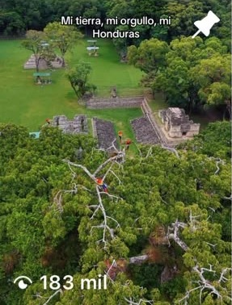
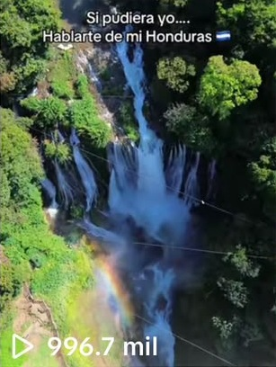
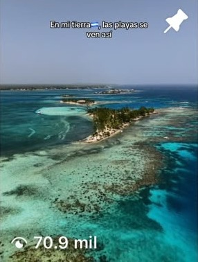
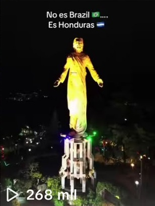
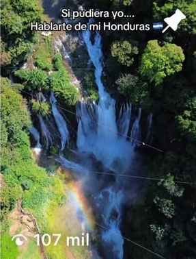

Se dedica a la creación de contenido estratégico y creativo para marcas de lifestyle y gastronomía, ayudándolas a conectar con su audiencia a través de redes sociales.
Con más de 6 años como creadora de contenido independiente, actualmente es Directora Creativa de su propio estudio, donde desarrolla contenido, campañas y estrategias digitales enfocadas en resultados reales.
Su comunidad está compuesta principalmente por mujeres interesadas en un estilo de vida balanceado, creativo y positivo. Conectan con contenido auténtico sobre redes sociales, lifestyle, gastronomía y recomendaciones reales de productos y servicios.
Creador de contenido de viajes enfocado en descubrir Honduras: aventuras, camping, naturaleza y vida de mochilero, con tomas aéreas con drone.
También ha documentado viajes por Ecuador, Costa Rica, Perú y El Salvador.




